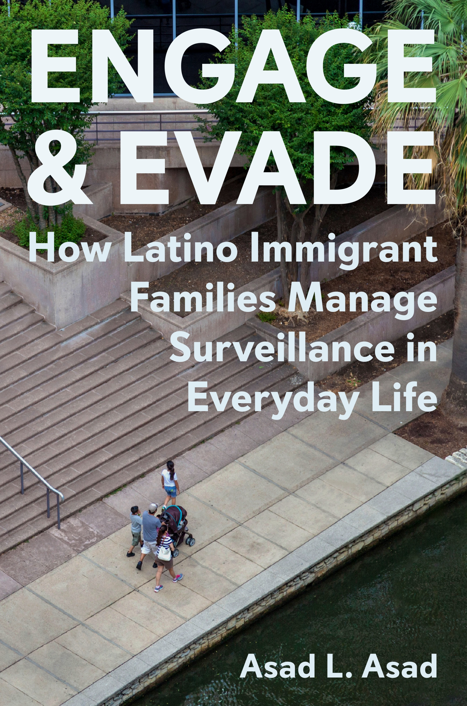

Assistant Professor of Sociology
Stanford University
Bridging the sociology of immigration, race/ethnicity, law, and health, Asad's scholarship advances theoretical explanations and empirical evidence for how institutional categories relate to social control and inequality. His multi-method work focuses on the U.S. immigration system and its disproportionate effects on Latino citizens and noncitizens.
Asad L. Asad is Assistant Professor of Sociology at Stanford University, where he is a faculty affiliate of the Center for Comparative Studies in Race and Ethnicity. Bridging the sociology of immigration, race/ethnicity, law, and health, his research examines how institutional categories relate to social control and inequality. His multi-method work focuses on the U.S. immigration system and its disproportionate effects on Latino citizens and noncitizens. Current research projects examine the effects of immigration enforcement on health, the federal judiciary's role in immigration enforcement, and the capacity of immigrant-serving organizations to transform the U.S. immigration system.
He is the author of the award-winning book Engage and Evade: How Latino Immigrant Families Manage Surveillance in Everyday Life (Princeton University Press, 2023). His articles appear in the Proceedings of the National Academy of Sciences, Law & Society Review, International Migration Review, and Social Science & Medicine, among other outlets. His work has been supported by the National Science Foundation and the Russell Sage Foundation.
Asad teaches undergraduate and graduate courses on race, ethnicity, and immigration, as well as an undergraduate course on research design and preparation. He is the recipient of the Stanford School of Humanities and Sciences Dean's Teaching Award, the CCSRE Faculty Recognition Award, and the Mellon Mays Undergraduate Fellows Faculty Mentor Book Award.
Asad earned his B.A. in Political Science and Spanish Language and Culture from the University of Wisconsin, and his A.M. and Ph.D. in Sociology from Harvard University.
Three interconnected lines of inquiry on how the U.S. immigration system produces social control and inequality — and what happens when institutions try to change it.
Since the mid-2000s, the federal government has embedded immigration enforcement within institutions like healthcare, education, and the labor market. Surveillance theories suggest that undocumented immigrants will avoid these institutions to prevent creating records that law enforcement can use to apprehend them. Yet most undocumented immigrants have lived in the U.S. for over a decade and regularly interact with these institutions. Asad's work shows that institutional categories' relationship with social control is situational, shaped by the contexts — cities, states, and time periods — in which they operate.
Standard proxies of social control — such as policies and enforcement actions — do not always predict Latino citizens' and noncitizens' health. Asad argues that salience, or at-risk populations' collective awareness of the threat of state sanction, helps explain this disconnect. Using public- and private-access Google Trends data to measure salience, he shows that salience — directly, and indirectly via policies and actions — shapes health outcomes in a racially stratified system, from psychological distress to infant birthweight.
Why does the immigration system's capacity for social control persist even after legal or policy reform? Across projects on international migration to the United States, federal and immigration judges' enforcement decisions, and advocates' efforts to challenge the system or mitigate its harms for immigrant families, this line of inquiry investigates the structural features that make control durable. Using multiple methods, Asad shows how reforms often reproduce control because they leave intact the very system they aim to change.

How Latino Immigrant Families Manage Surveillance in Everyday Life
Princeton University Press, 2023
How do undocumented immigrants navigate institutional involvement despite the constraints of their status as noncitizens? Drawing on repeated interviews over five years with Latino immigrant families in Dallas, ethnography of Dallas Immigration Court, and analyses of the American Time Use Survey, Asad theorizes “selective engagement” to explain how immigrants balance institutional risks and rewards. Rather than avoid institutions, undocumented immigrants modulate their interactions based on the situational demands of their multiple social roles. They minimize negative interactions and maximize positive ones that might signal moral worth — hoping that selective engagement will one day demonstrate to immigration officials that they deserve citizenship. Yet court observations show that, absent opportunities from the federal government, selective engagement is unlikely to secure it. The book reveals that surveillance operates both through the threat of exclusion and the promise of inclusion.
C. Wright Mills Award, Society for the Study of Social Problems
Mirra Komarovsky Book Award, Eastern Sociological Society
Distinguished Book Award, Pacific Sociological Association
Distinguished Book Award, Sociology of Law Section, American Sociological Association
Distinguished Book Award, Latina/o Sociology Section, ASA
Edwin H. Sutherland Book Award, Law and Society Division, SSSP
Robert J. Bursik Junior Scholar Award, Communities and Place Division, American Society of Criminology
Best Book in Current Events (Gold Medal), Independent Publishers Book Awards
Best First Book–Non-Fiction (Silver Medal), Independent Publishers Book Awards
Victor Villaseñor Best Latino Focused Nonfiction Book (Bronze Medal), International Latino Book Awards
Raúl Yzaguirre Best Political/Current Affairs Book (Bronze Medal), International Latino Book Awards
Herbert Jacob Book Prize (Honorable Mention), Law and Society Association
Otis Dudley Duncan Book Award (Honorable Mention), Population Section, ASA
Thomas and Znaniecki Book Award (Honorable Mention), International Migration Section, ASA
Charles Taylor Book Award (Honorable Mention), Interpretive Methodologies and Methods Section, American Political Science Association
Order of the Coif Book Award (Finalist), The Order of the Coif
Foreword INDIES Best Book in Political and Social Sciences (Finalist)